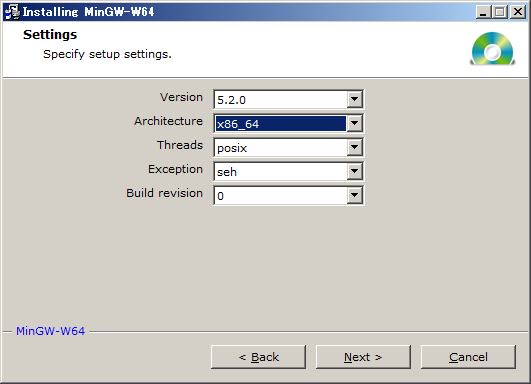

C++11のコンパイル環境構築 (全体の目次に戻る)
Linux or Mac における作業
LinuxとMacの場合は環境構築が非常に簡単です．
例えば、Ubuntu OS でしたら以下を実行すれば環境構築は完了です．
sudo apt-get install gcc
ただし、バージョン 4.7 以降の GCC をインストールして下さい(g++ -v でバージョン確認)．
GCC をソースからコンパイルする場合は例えば
こちらを参考にして下さい．
Windowsにおける作業
ファイル拡張子の表示
Windowsでプログラミングを始める際は必ずファイルの拡張子を表示するように設定してください．
表示方法は、例えば
こちらをご覧ください．
MinGWのインストール
開発環境の一つであるMinGW-W64をインストールします．
- 公式サイトからインストーラーをダウンロードして実行してください．
- 設定画面ではArchitectureを「x86_64」に設定します．
- MinGW-W64のインストール先は任意で構いません．
以下、MinGW-W64の「bin」フォルダをWindowsに登録する作業について説明します．
環境変数の設定
「コントロールパネル」→「システムとセキュリティ」→「システム」
から環境変数を設定します．